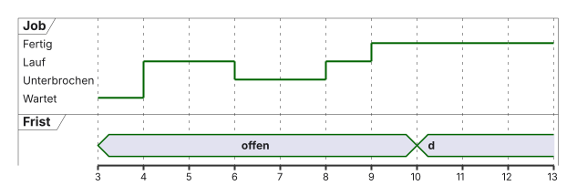

Zusammenfassung · Vorlesungen 1–6
Rückblick auf sechs Vorlesungen an einem Beispielsystem
Welche Aussage braucht welchen Nachweis?
Probeklausur selbstständig bearbeiten
Gemeinsame Besprechung und nächste Schritte
Dieser letzte Termin führt die Inhalte der Vorlesungen 1 bis 6 zusammen: Zeitvertrag, Polling und Interrupts, Scheduling-Theorie, Echtzeitbetriebssysteme, Synchronisation, Inter-Task-Kommunikation und Server-Verfahren. Die geplanten Einheiten 7 bis 9 zu Mehrkernsystemen, Timing-Analyse und integrierter Fallstudie wurden in diesem Durchgang nicht behandelt. Sie sind deshalb weder Teil dieses Rückblicks noch der heutigen Probeklausur.
Der Termin hat zwei Hälften. In der ersten Hälfte wiederholen wir jede Vorlesung in drei kompakten Folien und einem kurzen Verständnischeck. Dabei geht es nicht um neue Inhalte, sondern um die Verbindungen: Welche Größe gehört zu welcher Frage, welcher Test entscheidet was, und an welcher Stelle entstehen typische Verwechslungen? In der zweiten Hälfte bearbeiten Sie eine Probeklausur. Sie beginnt mit zwölf Multiple-Choice-Fragen und enthält danach vier Papieraufgaben. Anschließend vergleichen Sie Ihre Lösung mit der Musterlösung und ordnen eigene Fehler den Vorlesungen und Übungsblättern zu.
Die Folien sind bewusst knapp gehalten. Diese Skriptnotizen erläutern jeden Punkt so, dass Sie den Rückblick auch später allein zur Prüfungsvorbereitung nutzen können. Alle Zahlenwerte sind Lehrannahmen und keine Messwerte am Board.
Vier gute Nachrichten: Ist der Regler rechtzeitig?
Ein Kern, feste Prioritäten. Das Team meldet:
Die Gesamtauslastung beträgt 85 %.
10 000 Testläufe zeigten keine Fristverletzung.
Der Mutex für den Sollwert hat Prioritätsvererbung.
Die Ereignis-Queue hat doppelt so viele Plätze wie je belegt.
Reicht das als Nachweis, dass der Regler jede Frist einhält? Welche Angabe fehlt Ihnen am meisten?
Eine Minute allein, zwei Minuten zu zweit, dann Handzeichen.
Die Einstiegsfrage aktiviert Wissen aus allen sechs Vorlesungen: Auslastung und Fristnachweis aus Vorlesung 2, Messung und Schranke aus Vorlesung 1, Mutex und Prioritätsvererbung aus Vorlesung 4 und Queues aus Vorlesung 5. Gemeint ist ein Regler, also eine periodische Aufgabe mit harter Frist, in einem System mit weiteren Threads auf demselben Kern. Lassen Sie zunächst eine Minute einzeln überlegen und zwei Minuten zu zweit begründen. Sammeln Sie dann per Handzeichen, wer die vier Meldungen für ausreichend hält und welche Angabe am häufigsten fehlt.
Erwartbare Antworten sind „Ja, alles sieht gut aus“, „Nein, 85 Prozent liegen über der RMS-Schranke“ oder „Nein, Tests beweisen nichts“. Häufige Fehlvorstellungen sind: Eine Auslastung unter 100 Prozent garantiere Fristen; viele erfolgreiche Testläufe ersetzten einen Nachweis; Prioritätsvererbung beseitige jede Wartezeit; ein großer Puffer schütze vor Überlast. Jede dieser Meldungen ist für sich nützlich, aber keine trägt allein die Aussage „jede Frist wird eingehalten“.
Lösen Sie die Frage hier noch nicht auf. Halten Sie die genannten fehlenden Angaben sichtbar fest; typischerweise kommen sichere Ausführungszeitschranken, Prioritäten, Sperrwartezeiten und ein Ankunftsmodell für die Ereignisse vor. Im Rückblick erarbeiten wir, welcher Nachweis zu welcher Meldung gehört. Die Folie „Zurück zur Einstiegsfrage“ beantwortet die Frage am Ende vollständig und zeigt, welche anfängliche Vermutung bestätigt oder präzisiert wird.
Ablauf des letzten Termins
Einstiegsfrage und Orientierung
10
Rückblick Vorlesungen 1–6 mit Kurzchecks
48
Nachweise zuordnen und Klausurstrategie
12
Pause und Vorbereitung der Probeklausur
10
Probeklausur, danach Besprechung und Selbstkorrektur
restliche Zeit
Gesamt
180
Vier Schulstunden zu je 45 Minuten ergeben 180 Minuten. Die ersten zehn Minuten gehören der Einstiegsfrage und der Orientierung. Danach folgen 48 Minuten Rückblick: pro Vorlesung etwa acht Minuten, davon zwei bis drei Minuten für einen Kurzcheck. Die Kurzchecks verwenden neue Zahlen und sind so gewählt, dass sie mit Papier und ohne Taschenrechner in dieser Zeit lösbar sind, wie in der Probeklausur. Ihre vollständigen Lösungen stehen in den Notizen der jeweiligen Folie.
Weitere zwölf Minuten führen die Themen an einer Ereigniskette zusammen, beantworten die Einstiegsfrage und fassen eine Vorgehensweise für die Klausur zusammen. Nach einer Pause von zehn Minuten, in der auch die Tische für die Probeklausur vorbereitet werden, folgt die Probeklausur. Sie ersetzt die frühere Fassung und deckt ausschließlich die Vorlesungen 1 bis 6 ab. Für die Probeklausur ist bewusst keine feste Bearbeitungszeit vorgegeben; die restliche Zeit des Termins teilen sich Bearbeitung und Besprechung.
Zum Abschluss folgt die Besprechung. Sie korrigieren zunächst selbst mit der Musterlösung, anschließend werden die häufigsten Fehler gemeinsam erklärt. Wird der Rückblick kürzer, bleibt mehr Zeit für Probeklausur und Besprechung. Wird er länger, lassen sich einzelne Kurzchecks als Selbstlernaufgabe auslagern, damit für die Probeklausur und ihre Besprechung genügend Zeit bleibt.
Was Sie heute überprüfen
Aussagen über Zeitverhalten dem passenden Nachweis zuordnen
Zeitachsen, Antwortzeiten, Budgets und Queuezustände herleiten
Synchronisations- und Kommunikationsfehler diagnostizieren
Eine Probeklausur selbstständig lösen und Lücken zuordnen
Die vier Ziele sind beobachtbar und jeweils mit einer Verständnisprüfung verbunden. Erstens sollen Sie zu einer Aussage wie „Auslastung 85 Prozent“ oder „Mutex mit Vererbung“ angeben können, was sie zeigt und was sie nicht zeigt. Geprüft wird das mit der Einstiegsfrage und ihrer Auflösung am Ende des Rückblicks. Zweitens sollen Sie unter gegebenen Modellannahmen Zeitachsen zeichnen und daraus Antwortzeiten, verbleibende Budgets oder Queuebelegungen ableiten. Dazu dienen die Kurzchecks zu den Vorlesungen 1, 2, 3, 5 und 6 sowie die Papieraufgaben der Probeklausur.
Drittens sollen Sie ein beobachtetes Fehlverhalten wie ein verlorenes Update, einen Deadlock, eine Prioritätsinversion oder einen zu früh wiederverwendeten Puffer erkennen und eine passende Gegenmaßnahme mit ihren Voraussetzungen begründen. Das prüft der Kurzcheck zu Vorlesung 4 und mehrere Fragen der Probeklausur. Viertens bearbeiten Sie die Probeklausur nur mit Ihrer zweiseitigen Formelsammlung und ordnen Ihre Fehler anschließend den Vorlesungen und Übungsblättern zu. Damit erhalten Sie eine konkrete Liste für die weitere Vorbereitung. Die Probeklausur ist eine Übungsklausur ohne Bewertung; sie zeigt Ihren Stand, aber nicht die Inhalte einer späteren Prüfung.
Der rote Faden der Vorlesungen 1–6
1
Richtig und rechtzeitig?
Zeitvertrag: \(R\le D\) , Polling und Interrupt
2
Wer rechnet wann?
Task-Modell, RMS, EDF, Antwortzeitanalyse
3
Wie warten und fortsetzen?
Threadzustände, Ticks, Thread-Flags
4
Wer darf zugreifen?
Mutex, Semaphor, Deadlock, Vererbung
5
Wie kommen Daten an?
Queue, Pufferbesitz, Top-Half und Bottom-Half
6
Wie viel Zeit erhalten Ereignisse?
Serverbudget, Bedienregeln, Überlast
Umfang der Probeklausur: Vorlesungen 1–6 · Multicore, Timing-Analyse und Fallstudie nicht behandelt
Die Tabelle fasst jede Vorlesung in einer Leitfrage und ihrem wichtigsten Ergebnis zusammen. Vorlesung 1 hat den Zeitvertrag eingeführt: Ein Ergebnis ist nur dann korrekt, wenn es richtig und rechtzeitig vorliegt. Vorlesung 2 hat gefragt, wie mehrere Aufgaben auf einem Prozessor so zugeteilt werden, dass alle Fristen nachweisbar eingehalten werden. Vorlesung 3 hat mit einem Echtzeitbetriebssystem, englisch Real-Time Operating System oder RTOS, fortsetzbare Threads, Prioritäten und zeitgesteuertes Warten eingeführt.
Sobald mehrere Threads dieselben Daten oder Geräte nutzen, entstehen die Fragen aus Vorlesung 4: Welcher Schutz ist nötig, welche Wartezeiten entstehen dadurch, und wie unterscheiden sich Deadlock und Prioritätsinversion? Vorlesung 5 hat Daten zwischen Threads und aus Interrupts mit Queues übertragen und dabei Kopie, Speicherbesitz und Überlast unterschieden. Vorlesung 6 hat schließlich gezeigt, wie ereignisgetriebene Arbeit mit einem begrenzten Prozessorbudget neben periodischen Aufgaben eingeplant werden kann.
Die erste Zeile ist der Maßstab für alle weiteren: Jede spätere Vorlesung prüft am Ende denselben Zeitvertrag \(R\le D\) , nur mit mehr Mechanismen zwischen Ereignis und Ergebnis. Die ursprünglich geplanten Einheiten zu Mehrkernsystemen, Timing-Analyse und integrierter Fallstudie wurden nicht behandelt. Die heutige Probeklausur deckt deshalb genau die sechs gezeigten Stationen ab.
Ein Beispielsystem für den ganzen Rückblick
%%{init: {"theme":"base","flowchart":{"htmlLabels":false,"nodeSpacing":22,"rankSpacing":30},"themeVariables":{"primaryColor":"#FFFFFF","primaryBorderColor":"#656D76","primaryTextColor":"#1D1D1F","lineColor":"#656D76","secondaryColor":"#FFFFFF","tertiaryColor":"#FFFFFF"}}}%%
flowchart TD
accTitle: Beispielsystem einer Abfüllstation
accDescr: Eine Sensorflanke löst eine ISR aus, die einen Rohwert in eine Queue legt. Ein Worker-Thread entnimmt ihn und erzeugt den Stellbefehl. Worker und periodischer Regler lesen einen Sollwert unter einem Mutex. Diagnoseaufträge werden von einem Polling Server bedient.
S["Sensorflanke"] --> I["ISR · Top-Half"]
I -->|"Put, Timeout 0"| Q["Queue"]
Q -->|"Get"| W["Worker · hoch"]
W --> A["Stellbefehl"]
W --> M["Sollwert mit Mutex"]
R["Regler · periodisch"] --> M
D["Diagnose"] --> P["Polling Server"]
class S,I,Q,W,A,M,R,D,P standard
classDef standard fill:#FFFFFF,stroke:#656D76,color:#1D1D1F
linkStyle default stroke:#656D76
style Q fill:#FFFFFF,stroke:#E2001A,stroke-width:2px !important
Ein Kern · FreeRTOS über CMSIS-RTOS2 · alle Zahlen sind Lehrannahmen
Als roter Faden für den Rückblick dient eine vereinfachte Abfüllstation auf einem Prozessorkern. Eine Sensorflanke löst einen Interrupt aus. Die Interrupt Service Routine, kurz ISR, sichert den Rohwert und legt ihn ohne Warten in eine Queue; das ist die Top-Half aus Vorlesung 5. Ein hoch priorisierter Worker-Thread wartet blockiert auf diese Queue, entnimmt die Nachricht und erzeugt den Stellbefehl für ein Ventil. Für die Berechnung liest er einen Sollwert, den auch ein periodischer Regler verwendet. Diese gemeinsame Datenstruktur ist mit einem Mutex geschützt.
Daneben treffen unregelmäßig Diagnoseaufträge ein. Sie werden nicht mit beliebig hoher Priorität bearbeitet, sondern von einem Polling Server mit begrenztem Budget, damit Regler und Worker ihre Fristen behalten können. Die rot markierte Queue verbindet die Ereigniswelt der Interrupts mit der Threadwelt des Betriebssystems.
In den folgenden Abschnitten greifen wir jeweils einen Teil dieses Bildes heraus: den Zeitvertrag des Stellbefehls, die Einplanung von Regler und Worker, die Threadzustände, den Mutex, die Queue und den Server. Die Plattform entspricht dem Kurs: FreeRTOS über die Schnittstelle CMSIS-RTOS2. Die Abbildung ist ein funktionales Blockdiagramm, kein Schaltplan und kein gemessener Ablauf.
V1 · Richtig und rechtzeitig: der Zeitvertrag
\(r\) , \(f\) Freigabe und Fertigstellung eines Jobs
\(d=r+D\) absolute Deadline aus der relativen Frist \(D\)
\(C\) eigene Rechenzeit ohne Wartezeiten
\(R=f-r\) Antwortzeit einschließlich aller Wartezeiten
Hart: kein Miss · Fest: spät wertlos, begrenzte Misses · Weich: Restnutzen
Vorlesung 1 hat Echtzeitkorrektheit als zwei getrennte Prüfungen eingeführt: Das Ergebnis muss fachlich richtig sein und vor oder spätestens auf der Deadline vorliegen. Ein richtiger Stellbefehl nach der Frist verletzt den Vertrag ebenso wie ein rechtzeitiger falscher. „Möglichst schnell“ ist deshalb keine Anforderung; ein Zeitvertrag nennt Beginn, Abschluss und eine Frist.
Die Tabelle fasst die Zeitgrößen zusammen. Die Freigabe \(r\) ist der Zeitpunkt, ab dem ein Job bearbeitet werden darf, \(f\) der Zeitpunkt seines Abschlusses. Die relative Frist \(D\) ist eine Dauer ab der Freigabe, die absolute Deadline \(d=r+D\) ein Zeitpunkt auf der gemeinsamen Achse. \(C\) zählt nur die Zeit, in der der Job selbst rechnet. Die Antwortzeit \(R=f-r\) enthält zusätzlich Startverzug und Unterbrechungen. Eine typische Klausurfalle ist, \(C\) mit \(R\) zu vergleichen, obwohl die Frist für die gesamte Antwort gilt.
Die drei Echtzeitklassen beschreiben die Folgen einer Fristverletzung. Hart bedeutet: Kein Miss ist zulässig. Fest, englisch firm, bedeutet: Ein verspätetes Einzelergebnis ist wertlos, eine begrenzte Zahl von Ausfällen kann aber vertraglich erlaubt sein. Weich, englisch soft, bedeutet: Auch ein verspätetes Ergebnis hat noch Restnutzen. Die Klasse gehört zur Aufgabe und ihrem Vertrag, nicht zur Technik, mit der sie umgesetzt wird.
V1 · Messen, Jitter und sichere Schranke
Latenz braucht zwei genau definierte Messpunkte
Jitter: Spanne \(\max-\min\) derselben Größe
Mittelwert und Messmaximum sind keine Garantie
WCET: begründete obere Schranke unter benannten Annahmen
Konstante große Latenz: kein Jitter, trotzdem zu spät.
Eine Latenz ist der Abstand zwischen zwei Ereignissen, etwa von der Sensorflanke bis zu einem Marker im Callback. Ohne genaue Angabe beider Messpunkte ist eine Latenzzahl nicht vergleichbar. Jitter beschreibt die Schwankung derselben Größe; im Kurs wird er als Spanne zwischen größtem und kleinstem Wert berechnet, etwa \(J_L=\max(L_i)-\min(L_i)\) . Periodenjitter und Phasenabweichung gegenüber einem Sollraster sind dabei verschiedene Größen und dürfen nicht vermischt werden.
Für einen Fristnachweis zählt weder der Mittelwert noch der größte bisher beobachtete Wert. Ein System mit kleinem Mittelwert kann einzelne Fristen verfehlen, und eine endliche Messreihe kann den ungünstigsten Fall verpassen. Die WCET, Worst-Case Execution Time, ist deshalb als begründete obere Schranke der eigenen Ausführungszeit unter benannten Annahmen zu Eingaben, Takten, Cache und Störungen definiert. Ein Messmaximum ist ein Indiz, aber kein Beweis.
Der Satz unter der Liste erinnert an eine häufige Verwechslung: Kleiner Jitter bedeutet nicht kleine Latenz. Eine konstante Latenz von 30 Mikrosekunden hat keinen Jitter und verfehlt eine Frist von 20 Mikrosekunden trotzdem jedes Mal. Determinismus heißt im Kurs daher nicht „immer gleich“, sondern „mit begründeten Grenzen vorhersagbar“.
V1 · Polling und Interrupt
Erkennung
bei der nächsten Prüfung
Hardware fordert sofort an
Kurzer Puls ohne Speicher
kann verloren gehen
Pendingbit merkt mindestens einen
Antwortgrenze
ganze Runde plus Reaktion
Erfassung früh, Abschluss offen
NVIC: kleinere Zahl = dringlicher · volatile macht Lesen und Löschen nicht unteilbar
Beim Polling prüft die Hauptschleife einen Eingang regelmäßig selbst. Ein Ereignis wird frühestens bei der nächsten Prüfung erkannt. Bleibt es in einem Latch gespeichert, ergibt sich im Kursmodell eine konservative Antwortgrenze aus einer ganzen maximalen Runde bis zur Erkennung plus der Reaktion. Wird nur der momentane Pegel gelesen, kann ein kurzer Puls zwischen zwei Abfragen vollständig verloren gehen. Lange Arbeit lässt sich in kurze Schritte zerlegen; dann sinkt die Rundendauer und damit die Antwortgrenze.
Ein Interrupt Request, kurz IRQ, lässt die Hardware das Ereignis sofort anfordern. Der Nested Vectored Interrupt Controller, kurz NVIC, verwaltet anstehende Anforderungen und Prioritäten; eine kleinere Prioritätszahl bedeutet höhere Dringlichkeit. Ein Pendingbit merkt sich mindestens eine Anforderung, zählt aber keine Wiederholungen. Wichtig ist die rechte untere Zelle: Eine frühe Erfassung garantiert noch keinen rechtzeitigen Abschluss. Wenn die eigentliche Bearbeitung später in der Hauptschleife erfolgt, braucht auch deren Startverzug eine Grenze.
Ein gemeinsames Flag zwischen ISR und Hauptprogramm kann ein zweites Ereignis verlieren, wenn das Hauptprogramm nach dem Lesen löscht. Das Schlüsselwort volatile verhindert nur, dass der Compiler Zugriffe wegoptimiert; es macht die Folge aus Lesen und Löschen nicht unteilbar.
Kurzcheck V1: eine Antwort aus der Zeitachse
Lehrmodell · Zeit in ms · Verwaltungsaufwand nicht modelliert

Freigabe bei \(r=3\) , relative Frist \(D=7\) : Bestimmen Sie \(C\) , \(R\) , \(d\) und die Fristreserve.
Die Zeitachse zeigt einen einzelnen Job. Er wird bei 3 ms freigegeben und wartet zunächst bis 4 ms, etwa weil eine andere Arbeit läuft. Von 4 bis 6 ms rechnet er, von 6 bis 8 ms ist er unterbrochen, von 8 bis 9 ms rechnet er weiter und ist dann fertig. Die untere Zeile markiert, ab wann die Frist abgelaufen ist. Bearbeitungszeit: etwa zwei Minuten.
Lösung: Die eigene Rechenzeit ist \(C=(6-4)+(9-8)=3\,\mathrm{ms}\) . Die Antwortzeit beträgt \(R=f-r=9-3=6\,\mathrm{ms}\) ; sie enthält eine Millisekunde Startverzug und zwei Millisekunden Unterbrechung. Die absolute Deadline ist \(d=r+D=3+7=10\,\mathrm{ms}\) , die Fristreserve also \(d-f=10-9=1\,\mathrm{ms}\) . Wegen \(R=6\,\mathrm{ms}\le D=7\,\mathrm{ms}\) ist dieser Job rechtzeitig.
Typische Fehlannahmen sind, die Antwortzeit ab Ausführungsbeginn statt ab Freigabe zu zählen, die Unterbrechung zur eigenen Rechenzeit zu addieren oder die relative Frist von null statt von der Freigabe aus abzutragen. Beachten Sie außerdem: Ein einzelner rechtzeitiger Job ist kein Nachweis für alle künftigen Jobs. Dafür braucht es das Modell und die Analyse aus Vorlesung 2.
V2 · Task, Job und Auslastung
Task \(\tau_i\) erzeugt Jobs \(J_{i,k}\) mit \(C_i\) , \(T_i\) und \(D_i\)
Periodisch, sporadisch mit Mindestabstand, aperiodisch
\(U=\sum_i C_i/T_i\) ; \(U>1\) ist auf einem Kern dauerhaft unmöglichKleines \(U\) beweist nichts bei kurzen Fristen \(D_i<T_i\)
Machbarkeit: Gibt es einen Plan? · Einplanbarkeit: Schafft es die gewählte Regel?
Vorlesung 2 hat aus Funktionen prüfbare Modelle gemacht. Eine Task \(\tau_i\) beschreibt eine Folge von Jobs \(J_{i,k}\) mit gemeinsamen Parametern: der oberen Schranke der eigenen Ausführungszeit \(C_i\) , der Periode oder dem Mindestabstand \(T_i\) und der relativen Deadline \(D_i\) . Periodisch heißt fester Abstand, sporadisch heißt mindestens dieser Abstand, aperiodisch heißt ohne zugesicherten Mindestabstand. Ein Thread des Betriebssystems ist davon zu unterscheiden; er kann viele Jobs nacheinander bearbeiten.
Die Auslastung \(U=\sum_i C_i/T_i\) ist einheitenlos und beschreibt den langfristigen Bedarf. Ein Prozessor liefert höchstens den Anteil eins, deshalb ist \(U>1\) dauerhaft nicht einzuhalten. Umgekehrt beweist ein kleines \(U\) keine Fristtreue: Zwei Jobs mit je 2 ms Bedarf und einer Frist von 3 ms können bei gleichzeitiger Freigabe nicht beide rechtzeitig fertig werden, obwohl ihre Auslastung bei Perioden von 10 ms nur 40 Prozent beträgt.
Die untere Zeile unterscheidet zwei Fragen. Machbarkeit, englisch feasibility, fragt, ob irgendein zulässiger Plan existiert. Einplanbarkeit, englisch schedulability, fragt, ob die gewählte Auswahlregel alle Fristen einhält. Eine Regel kann an einem grundsätzlich machbaren Set scheitern; dann kann eine andere Regel helfen. Ist ein Set nicht machbar, hilft keine Regel.
V2 · Welcher Test entscheidet was?
Liu-Layland \(U\le n(2^{1/n}-1)\)
RMS, \(D_i=T_i\) , Idealmodell
Erfolg bewiesen
offen
Antwortzeitanalyse
feste Prioritäten, \(D_i\le T_i\)
Erfolg bewiesen
Miss im Modell
EDF-Test \(U\le1\)
\(D_i=T_i\) , IdealmodellErfolg bewiesen
Überlast
Jedes Ergebnis gilt nur zusammen mit seinen Modellannahmen.
Das Idealmodell aus Vorlesung 2 umfasst einen Prozessor, unabhängige periodische Aufgaben, vollständige Präemption, sichere Schranken \(C_i\) und keine Sperren, Selbstsuspendierung, Freigabeschwankungen oder Verwaltungskosten. Unter Rate Monotonic Scheduling, kurz RMS, erhält die kürzere Periode den höheren festen Rang.
Die Liu-und-Layland-Schranke ist hinreichend: Liegt \(U\) darunter, ist RMS-Erfolg bewiesen. Für zwei Aufgaben beträgt sie etwa 82,84 Prozent, für drei etwa 77,98 Prozent. Liegt \(U\) darüber, ist nichts entschieden; viele Sets oberhalb der Schranke halten ihre Fristen trotzdem. Die Antwortzeitanalyse ist für feste Prioritäten mit \(D_i\le T_i\) im Modell exakt. Sie liefert für jede Aufgabe die größte Antwortzeit im kritischen Fall gemeinsamer Freigabe und entscheidet damit auch oberhalb der Schranke.
Earliest Deadline First, kurz EDF, wählt unter den bereiten Jobs den mit der frühesten absoluten Deadline. Für \(D_i=T_i\) im Idealmodell ist \(U\le1\) notwendig und hinreichend. Dieser einfache Test gilt nicht unverändert für \(D_i<T_i\) . Häufige Fehler sind, eine überschrittene Schranke als bewiesene Fristverletzung zu lesen, die Schranke bei \(D_i<T_i\) anzuwenden oder EDF-Prioritäten nach Perioden zu vergeben. Echte Sperren, Interruptkosten und Wechselzeiten müssen in einem erweiterten Modell zusätzlich berücksichtigt werden.
V2 · Antwortzeitanalyse in vier Schritten
\[R_i^{(0)}=C_i,\qquad
R_i^{(k+1)}=C_i+\sum_{j\in hp(i)}\left\lceil\frac{R_i^{(k)}}{T_j}\right\rceil C_j\]
Prioritäten festlegen und mit dem eigenen Bedarf beginnen
Störerjobs im halboffenen Fenster \([0,R)\) aufrunden
Bis zum Fixpunkt oder bis \(R_i>D_i\) iterieren
Ergebnis mit \(D_i\) vergleichen und das Modell nennen
Die Formel berechnet die Antwortzeit einer Aufgabe \(\tau_i\) bei festen Prioritäten. \(hp(i)\) ist die Menge der höher priorisierten Aufgaben. Man beginnt mit der eigenen Arbeit \(R_i^{(0)}=C_i\) . In jedem Schritt wird gezählt, wie viele Jobs jeder Störer \(\tau_j\) im Fenster der aktuellen Länge freigibt; jeder davon verdrängt \(\tau_i\) um \(C_j\) . Das Fenster wächst, bis sich der Wert nicht mehr ändert oder die Deadline überschritten ist.
Aufgerundet wird, weil auch ein nur angebrochener Störerzeitraum bereits einen vollständigen Job freigibt. Das Fenster ist halboffen: Bei einem Fenster von genau 5 ms und \(T_j=5\,\mathrm{ms}\) zählt nur die Freigabe bei null, die Freigabe bei 5 ms liegt am ausgeschlossenen rechten Rand. Deshalb gilt \(\lceil5/5\rceil=1\) .
Zwei Fehler kosten in Klausuren besonders oft Punkte. Erstens darf die Iteration nicht beim ersten Wert unterhalb der Deadline abbrechen; erst der Fixpunkt ist die Antwortzeit. Zweitens müssen alle höher priorisierten Aufgaben berücksichtigt werden, nicht nur die direkt darüber liegende. Schreiben Sie jede Iteration mit eingesetzten Werten auf. Dann sind auch bei einem Rechenfehler Folgepunkte möglich, und der Nachweis bleibt nachvollziehbar. Nennen Sie am Ende ausdrücklich, unter welchem Modell der Nachweis gilt.
Kurzcheck V2: RMS oder EDF?
Idealmodell, ein Prozessor, \(D_i=T_i\) , synchrone Freigabe bei null
\(\tau_1\) 3
5
\(\tau_2\) 3
8
Auslastung und Vergleich mit der Liu-Layland-Schranke
Antwortzeitanalyse für \(\tau_2\) unter RMS
Was gilt unter EDF?
Bearbeitungszeit: etwa drei Minuten. Es gelten die Annahmen des Idealmodells, insbesondere vollständige Präemption und keine Zusatzkosten.
Lösung zu 1: \(U=3/5+3/8=0{,}6+0{,}375=0{,}975=97{,}5\,\%\) . Die Schranke für zwei Aufgaben beträgt etwa \(82{,}84\,\%\) . Die Schranke entscheidet also nicht. Es folgt weder Erfolg noch Fristverletzung.
Lösung zu 2: Unter RMS hat \(\tau_1\) mit der kürzeren Periode den höheren Rang. Für \(\tau_2\) gilt \(R_2^{(0)}=3\) , \(R_2^{(1)}=3+\lceil3/5\rceil\cdot3=6\) und \(R_2^{(2)}=3+\lceil6/5\rceil\cdot3=9\,\mathrm{ms}\) . Das überschreitet \(D_2=8\,\mathrm{ms}\) ; die Iteration endet hier. Im kritischen Fall gemeinsamer Freigabe verfehlt \(\tau_2\) seine Frist. Auf der Zeitachse: \(\tau_1\) läuft von 0 bis 3, \(\tau_2\) von 3 bis 5, \(\tau_1\) von 5 bis 8. Bei 8 ms fehlt \(\tau_2\) noch eine Millisekunde.
Lösung zu 3: Unter EDF ist das Set einplanbar, weil \(D_i=T_i\) und \(U\le1\) gelten. Der Vergleich zeigt: Eine Fristverletzung unter RMS beweist nicht, dass das Set unmöglich ist. Die feste Rangfolge nach Perioden ist hier die Ursache, nicht fehlende Rechenkapazität. Ein häufiger Fehler ist, nach dem ersten Iterationswert von 6 ms bereits Erfolg zu melden.
V3 · Thread, Zustände und Auswahl
Ready
könnte rechnen, wartet auf Zuteilung
Running
dem Kern zugeteilt
Blocked
wartet auf Zeit oder ein Ereignis
Der höchstpriorisierte bereite Thread läuft; ein höherer verdrängt sofort
osThreadYield() blockiert nicht · dauerbereite hohe Last: Starvation
Vorlesung 3 hat den kooperativen Dispatcher durch ein präemptives Echtzeitbetriebssystem ersetzt. Ein Thread ist ein fortsetzbarer Ausführungsablauf mit eigenem Stack und eigenem Task Control Block, kurz TCB. Der Kernel kann ihn mitten in seinem Code anhalten, den Kontext sichern und später fortsetzen. Ein Thread lebt deshalb länger als ein einzelner Job; in seiner Endlosschleife bearbeitet er Job um Job und wartet dazwischen.
Die drei Zustände beantworten drei Fragen. Ready heißt: Der Thread könnte rechnen, bekommt den Prozessor aber gerade nicht. Running heißt: Er ist zugeteilt; auf einem Kern gilt das für höchstens einen Thread. Blocked heißt: Er wartet auf Zeit oder ein Ereignis und nimmt an der Auswahl nicht teil. Ein bereit gewordener Thread läuft erst, wenn er ausgewählt wird. Bei festen Prioritäten wählt der Scheduler den höchstpriorisierten Thread im Zustand Ready; wird ein höherer Thread bereit, verdrängt er den laufenden.
osThreadYield() fordert nur eine neue Auswahl an und lässt den Aufrufer im Zustand Ready. Ein gleich hoher Thread kann dadurch drankommen, ein niedrigerer nicht. Bleibt ein hoch priorisierter Thread dauerhaft bereit, verhungert ein niedrigerer; das heißt Starvation. Starvation hat keine gemeinsame Ressource als Ursache und ist deshalb keine Prioritätsinversion. Abhilfe schaffen eine passende Priorität oder ein blockierender Warteaufruf im hohen Thread.
V3 · Zeit in Ticks und periodisches Warten
\(n=\lceil t_{\mathrm{ms}}\,f_{\mathrm{tick}}/1000\rceil\) Ticks; die Tickphase verkürzt die erste WartezeitosDelay(n): relative Pause, Arbeitsdauer verschiebt den PlanosDelayUntil(next): absolutes SollrasterHAL_Delay: aktives Warten, kein Blocked
Verpasstes Ziel: Überlastpolitik festlegen statt nachholen.
Ein RTOS misst Zeit in Kernelticks. Bei einer Tickfrequenz \(f_{\mathrm{tick}}\) entspricht eine gewünschte Dauer von \(t_{\mathrm{ms}}\) Millisekunden aufgerundet \(n=\lceil t_{\mathrm{ms}}f_{\mathrm{tick}}/1000\rceil\) Ticks. Bei 1000 Hz ist ein Tick eine Millisekunde, bei 100 Hz zehn Millisekunden. Wird osDelay(1) kurz vor einer Tickgrenze aufgerufen, kann der Thread schon nach einem Bruchteil eines Ticks wieder Ready werden. Die tatsächliche Wartezeit hängt also von der Tickphase ab, und Ready ist noch kein garantierter Start.
osDelay(n) wartet relativ zum Aufruf. Steht der Aufruf nach der Arbeit, verschiebt jede Arbeitsdauer den nächsten Start; der Plan driftet. osDelayUntil(next) wartet dagegen auf einen absoluten Tickwert. Erhöht der Thread next jedes Mal um die Periode, bleibt das Sollraster stabil, solange kein Ziel verpasst wird. Die übliche HAL_Delay wartet aktiv in einer Schleife; der Thread bleibt ausführungsbereit und verbraucht zugeteilte CPU-Zeit.
Ist ein Ziel bereits verpasst, braucht die Anwendung eine Entscheidung. Die Laborpolitik zählt die Verfehlung, richtet das nächste Ziel neu an jetzt plus Periode aus und wartet dann. Eine sofortige Serie nachgeholter Aktionen wäre selten fachlich sinnvoll. Eine Zielverfehlung im Code ist erst dann eine Deadlineverletzung, wenn der Zeitvertrag diese Frist so definiert.
V3 · Vom Interrupt zum wartenden Thread
ISR setzt ein Thread-Flag; der Ereignis-Thread wartet Blocked
Ein bereits gesetztes Bit zählt keine Wiederholungen
Ready in der ISR, Running erst nach dem ISR-Ende
Jeder Thread hat eigenen Stack und TCB
Thread- bzw. Taskpriorität
größerer Wert
logische NVIC-Priorität
kleinere Zahl
Ein Ereignis aus der Hardware erreicht einen Thread in Vorlesung 3 über ein Thread-Flag. Der Ereignis-Thread ruft osThreadFlagsWait auf und ist bis zum Setzen des Bits Blocked. Die ISR ruft osThreadFlagsSet mit gültigem Handle auf. Dadurch wird der Thread Ready. Laufen kann er aber erst, wenn die ISR beendet ist und der Kernel ihn auswählt; im Cortex-M-Port geschieht der Kontextwechsel über die aufgeschobene Ausnahme PendSV.
Ein Thread-Flag ist ein Hinweisbit. Wird es zweimal gesetzt, bevor der Thread es annimmt, bleibt es einfach gesetzt; der Thread sieht einen Hinweis, nicht zwei. Wer jedes Ereignis einzeln braucht, verwendet in Vorlesung 5 eine Queue. Ein erfolgreicher Wait löscht das angenommene Bit, sofern osFlagsNoClear nicht gesetzt ist. Fehler erkennt man am gesetzten Fehlerbit im Rückgabewert, nicht durch einen Vergleich mit osOK.
Die Tabelle stellt zwei Prioritätsskalen gegenüber, die leicht verwechselt werden. Bei Threads bedeutet ein größerer Wert, etwa osPriorityHigh, mehr Vorrang. Bei der logischen NVIC-Priorität bedeutet eine kleinere Zahl höhere Dringlichkeit. Kernelaufrufe aus einer ISR sind nur ab einer konfigurierten Grenze erlaubt, also für numerisch gleiche oder größere Werte. Die Threadpriorität des Empfängers ändert an der Zulässigkeit einer IRQ-Priorität nichts. Jeder Thread belegt zudem eigenen Speicher für Stack und TCB; stack_size in CMSIS wird in Byte angegeben.
Kurzcheck V3: relative Pause oder Sollraster?
Tick 1000 Hz · Periode 8 ms · Arbeitsdauern 4, 1 und 3 ms
Arbeitsenden auf Tickgrenzen · sofortige Zuteilung beim Ready-Werden
Starts mit „Arbeit, dann osDelay(8)“
Starts mit absolutem 8-Tick-Sollraster über osDelayUntil
Was folgt, wenn eine Arbeit 10 ms statt 4 ms dauert?
Bearbeitungszeit: etwa zwei Minuten. Erster Start bei 0 ms; es gibt keine weiteren Threads, die den Start verzögern.
Lösung zu 1: Die erste Arbeit endet bei 4 ms, danach wartet der Thread acht Ticks und startet bei 12 ms. Die zweite Arbeit endet bei 13 ms, der dritte Start liegt bei 21 ms. Die dritte Arbeit endet bei 24 ms, der vierte Start liegt bei 32 ms. Die Startabstände betragen 12, 9 und 11 ms; jede Arbeitsdauer verschiebt den Plan.
Lösung zu 2: Mit absolutem Sollraster liegen die Starts bei 0, 8, 16 und 24 ms. Der Thread erhöht sein Ziel jeweils um acht Ticks und wartet auf diesen absoluten Wert, unabhängig von der vorherigen Arbeitsdauer.
Lösung zu 3: Endet die erste Arbeit erst bei 10 ms, ist das Ziel 8 ms bereits verpasst. osDelayUntil darf nicht auf einen vergangenen Tick warten. Nach der Laborpolitik wird die Verfehlung gezählt und das nächste Ziel auf \(10+8=18\,\mathrm{ms}\) gesetzt. Eine sofortige Nachholserie entfällt. Ob dabei eine Deadline verletzt wurde, hängt vom Zeitvertrag ab, nicht allein vom verpassten Tickziel. Ein typischer Fehler ist die Annahme, osDelay(8) erzeuge automatisch eine Periode von 8 ms.
V4 · Gemeinsame Daten schützen
Die Invariante bestimmt den Schutzumfang
Lesen–Ändern–Schreiben kann ein Update verlieren
volatile ist weder Atomarität noch MutexLeser gehören zum selben Schutzvertrag
Ein Thread-Mutex schützt nicht gegen ISR, DMA oder anderen Kern
Vorlesung 4 beginnt bei der Frage, was bei gemeinsamen Daten wahr bleiben soll. Diese Eigenschaft heißt Invariante, etwa „Wert und Prüffeld stammen aus derselben Aktualisierung“. Der kritische Abschnitt umfasst alle Zugriffe, die gemeinsam diese Invariante lesen oder ändern. Er soll klein, aber vollständig sein.
Eine C-Zeile wie counter++ ist keine unteilbare Operation. Im Maschinenmodell lädt der Thread den Wert in ein Register, erhöht ihn und schreibt ihn zurück. Wird er dazwischen verdrängt und ein zweiter Thread erhöht denselben Wert, überschreibt der erste anschließend die Änderung: Zwei Erhöhungen haben nur eine Wirkung. Das ist ein verlorenes Update, ein typischer Fall einer Race Condition. Schützen muss man das gesamte Lesen–Ändern–Schreiben, nicht nur den Speicherbefehl. volatile hilft nicht, weil es nur die Compilerzugriffe festlegt.
Auch Leser müssen sich an denselben Schutz halten. Liest ein Thread Wert und Prüffeld ohne Mutex, kann er einen gemischten Stand sehen. Ein bewährtes Muster ist der private Snapshot: unter dem Mutex kopieren und danach außerhalb weiterrechnen. Schließlich hat jeder Schutz einen Wirkungskreis. Ein Mutex wirkt nur zwischen Threads, die ihn verwenden. Gegen eine ISR braucht es eine kurze Interruptsperre oder eine Übergabe, gegen DMA oder einen anderen Kern einen eigenen Hardware- und Speichervertrag.
V4 · Mutex, Semaphor und Thread-Flag
Zweck
Besitz einer Ressource
verfügbare Token
Hinweis an einen Thread
Besitzer
ja, nur er gibt frei
keiner
Zielthread
Aus erlaubter ISR
unzulässig
Release erlaubt
Set erlaubt
Wiederholung
—
zählt bis max_count
Bit bleibt gesetzt
Vererbung
mit passendem Attribut
nein
nein
Die drei Mechanismen dienen verschiedenen Zwecken, und die erste Entscheidung ist immer der Zweck. Ein Mutex schützt eine Ressource durch Besitz. Erst ein erfolgreicher Erwerb mit osMutexAcquire erlaubt den Zugriff; nach einem Timeout darf der Thread weder zugreifen noch freigeben. Freigeben darf nur der Besitzer mit osMutexRelease. Mit dem Attribut osMutexPrioInherit unterstützt der Mutex Prioritätsvererbung. Mutexfunktionen sind aus einer ISR unzulässig, auch mit Timeout null.
Ein Semaphor verwaltet Token ohne Besitzer. Acquire verbraucht ein Token, Release stellt eines bereit, auch durch einen anderen Teilnehmer. Ein binärer Semaphor hat höchstens ein Token; leer angelegt eignet er sich als Ereignishinweis, mit einem Token als einfacher Ressourcenschutz ohne Vererbung. Ein Zähl-Semaphor mit drei Token sagt, wie viele Puffer frei sind, aber nicht welche. Releases über max_count hinaus scheitern.
Ein Thread-Flag ist ein Hinweisbit genau eines Zielthreads und speichert keine Anzahl. Aus einer ISR mit zulässiger Priorität dürfen osSemaphoreRelease und osThreadFlagsSet aufgerufen werden, sofern das Handle gültig ist. Ein häufiger Fehler ist, einen Semaphor als Ersatz für einen Mutex zu verwenden und Prioritätsvererbung zu erwarten. Ein anderer ist, aus einem Semaphor-Token auf eine bestimmte Pufferadresse zu schließen.
V4 · Deadlock oder Prioritätsinversion?
Ursache
geschlossener Wartezyklus
Halter L wird von M verdrängt, H wartet
Fortschritt
Beteiligte nie ohne Eingriff
L könnte bei Zuteilung freigeben
Gegenmittel
feste Erwerbsordnung, Timeout mit Aufräumen
Prioritätsvererbung
Vererbung hilft?
nein
ja; die Restarbeit von L bleibt
Beide Phänomene lassen eine Aufgabe warten, haben aber verschiedene Ursachen. Ein Deadlock ist ein geschlossener Wartezyklus: T1 hält A und wartet auf B, T2 hält B und wartet auf A. Die vier Coffman-Bedingungen sind gegenseitiger Ausschluss, Halten und Warten, kein zwangsweiser Ressourcenentzug und zirkuläres Warten. „Kein Entzug“ meint die Ressource, nicht die Prozessorzuteilung. Eine feste globale Erwerbsordnung verhindert den Zyklus. Ein Timeout hilft nur mit einem Fehlerpfad, der bereits gehaltene Ressourcen freigibt und begonnene Änderungen konsistent behandelt.
Bei einer Prioritätsinversion mit \(H>M>L\) hält L einen Mutex, den H benötigt. H wird Blocked. M benutzt den Mutex nicht, verdrängt aber L und verzögert dadurch indirekt H. Es gibt keinen Zyklus: L könnte sofort freigeben, wenn es zugeteilt würde. Prioritätsvererbung hebt L vorübergehend auf die wirksame Priorität von H, sobald H wartet. M kann L dann nicht mehr verdrängen. Die restliche geschützte Arbeit von L bleibt jedoch als Sperrwartezeit von H bestehen, in Vorlesung 4 als Lockwartezeit berechnet, und muss im Fristnachweis berücksichtigt werden.
Vererbung öffnet keinen Deadlock-Zyklus. Starvation ist ein drittes Phänomen ohne Ressource: Ein dauerbereiter hoher Thread lässt einen niedrigeren nie laufen. Die Mars-Pathfinder-Mission von 1997 ist das bekannte Praxisbeispiel einer Inversion, die durch Aktivieren der Vererbung behoben wurde.
Kurzcheck V4: Welches Phänomen liegt vor?
Zwei Threads erhöhen count; nach zwei Erhöhungen fehlt eine.
T1 hält A und wartet auf B; T2 hält B und wartet auf A.
H wartet auf den Mutex von L; M rechnet lange ohne Mutex.
Ein hoher Thread bleibt Ready und ruft osThreadYield(); ein niedriger läuft nie.
Nennen Sie Phänomen und passende Gegenmaßnahme.
Bearbeitungszeit: etwa zwei Minuten. Es gelten ein Kern und feste Prioritäten. Ziel ist, aus einem beschriebenen Ablauf die Ursache zu diagnostizieren und nicht nur einen Begriff zuzuordnen.
Lösung zu 1: Verlorenes Update als Folge einer Race Condition. Beide Threads haben denselben alten Wert geladen. Gegenmaßnahme: das gesamte Lesen–Ändern–Schreiben mit demselben Mutex schützen oder eine geeignete atomare Operation verwenden; volatile genügt nicht.
Lösung zu 2: Deadlock mit geschlossenem Wartezyklus. Gegenmaßnahme: feste Erwerbsordnung, etwa immer zuerst A, dann B. Alternativ Timeout mit Fehlerpfad, der A freigibt und Änderungen zurücknimmt, sowie eine Wiederholungsregel.
Lösung zu 3: Prioritätsinversion. M verzögert den Halter L und damit indirekt H. Gegenmaßnahme: Mutex mit Prioritätsvererbung und kurzer kritischer Abschnitt; die Restarbeit von L bleibt als Sperrwartezeit im Nachweis.
Lösung zu 4: Starvation ohne gemeinsame Ressource. Yield nimmt den hohen Thread nicht aus Ready. Gegenmaßnahme: im hohen Thread blockierend auf Daten oder Zeit warten oder die Prioritäten passend zum Zweck vergeben.
Ein häufiger Fehler ist, Fall 3 und Fall 4 gleichzusetzen. Entscheidend ist, ob H auf eine Ressource eines niedrigeren Threads wartet. In Fall 4 wartet niemand auf eine Ressource.
V5 · Queue: Kopie, Reihenfolge, Kapazität
Put kopiert bei Erfolg; Get entnimmt jede Nachricht genau einmal
osErrorResource bei Timeout 0: Queue voll bzw. leerFIFO puffert Lastspitzen, erzeugt aber keine Rechenzeit
Bei Ankunftsrate \(\lambda\) größer als Bedienrate \(\mu\) läuft jeder endliche Puffer voll
\(N\ge\max_t\bigl(Q_0+A(t)-D(t)\bigr)\) für ein verlustfreies Referenzmodell
Vorlesung 5 hat Queues als begrenzte Nachrichtenwarteschlangen eingeführt. osMessageQueuePut kopiert bei Erfolg die vereinbarten Elementbytes in einen freien Platz; der Sender darf seine lokale Variable danach wiederverwenden. Ein erfolgreicher Put bedeutet aber nur „eingereiht“, nicht „verarbeitet“. osMessageQueueGet entnimmt die älteste Nachricht. Im Kurs gilt FIFO, First In First Out; der verwendete Adapter ignoriert den Nachrichtenvorrang msg_prio. Mit Timeout null meldet osErrorResource eine volle Queue beim Put und eine leere beim Get. Momentaufnahmen wie osMessageQueueGetSpace reservieren keinen Platz.
Im Ringpuffer bezeichnen Head den nächsten Entnahmeplatz und Tail den nächsten Einfügeplatz. Gleiche Indizes können leer oder voll bedeuten; deshalb führt das Modell zusätzlich einen Zähler.
Die Kapazität ergibt sich aus der höchsten Zwischenbelegung eines verlustfreien Referenzlaufs: Anfangsbelegung \(Q_0\) plus bisher angebotene Nachrichten \(A(t)\) minus bisherige Entnahmen \(D(t)\) . Diese Rechnung gilt nur für einen begrenzten Zeitraum. Ist die Ankunftsrate \(\lambda\) dauerhaft größer als die Bedienrate \(\mu\) , wächst die Belegung ohne Grenze; ein größerer Puffer verschiebt nur den ersten Verlust. Dann braucht die Anwendung eine bewusste Überlastregel: Sender warten lassen, neue Daten verwerfen, ältere Zustände ersetzen oder einen Fehler melden. Eine weitere Falle ist ein Anwendungsdeadlock, wenn ein Producer einen Mutex hält und im Put auf Platz wartet, den nur ein Consumer mit demselben Mutex schaffen könnte.
V5 · Wert, Zeiger und Pufferbesitz
Wertqueue
Kopie der Elementbytes
„Put heißt verarbeitet“
Pointerqueue
Adresse; der Besitz wandert
Puffer zu früh neu befüllt
Latest-Value
jüngster gültiger Zustand
1er-Queue mit Try-Put
Mehrere Get-Consumer
jede Nachricht genau einmal
„alle erhalten alles“
Die Tabelle unterscheidet vier Übertragungsverträge. Eine Wertqueue kopiert die Nachricht; spätere Änderungen an der Senderkopie ändern die eingereihte Nachricht nicht. Eine Pointerqueue kopiert dagegen nur die Adresse eines Puffers. Der Inhalt bleibt im Puffer, und mit der Adresse wandert die Verantwortung. Der Producer darf den Puffer erst wieder befüllen, wenn der Consumer ihn zurückgegeben hat. Scheitert der Put, bleibt der Producer verantwortlich. Queueplätze und Puffer werden getrennt gezählt: Zehn Pointerplätze bedeuten nicht zehn vorhandene Bildpuffer.
Ein Latest-Value-Vertrag liefert den jüngsten gültigen Zustand; ältere Zwischenstände dürfen entfallen. Eine Queue der Länge eins mit Try-Put, also Put mit Timeout null, leistet das nicht. Bei voller Queue scheitert der neue Put, und der älteste Wert bleibt. Für den jüngsten Zustand braucht es einen ausdrücklichen Overwrite- oder Snapshot-Vertrag, etwa einen unter Mutex veröffentlichten Datensatz mit Versionsnummer.
Mehrere Consumer an derselben Queue teilen sich die Arbeit: Jede Nachricht geht an genau einen Get-Aufrufer. Müssen zwei Empfänger jede Nachricht erhalten, braucht jeder einen eigenen Zustellvertrag, etwa eine eigene Queue mit eigener Überlaufregel. Diese Unterscheidungen sind in Multiple-Choice-Fragen beliebt, weil die falschen Optionen im Alltag plausibel klingen.
V5 · Top-Half, Bottom-Half und ISR-Regeln
ISR sichert Rohdaten und übergibt ohne Warten
Ein Worker-Thread erledigt die eigentliche Verarbeitung
Drei Bedingungen für einen Kernelaufruf in der ISR:
Funktion im Interruptkontext zugelassen
Kein Warten: Timeout 0
Logische IRQ-Priorität mindestens so groß wie die Kernelgrenze
Zeitanteile disjunkt zerlegen: ISR-Dauer und Ready-Warten können überlappen.
Deferred Interrupt Processing teilt die Interruptbehandlung in zwei Teile. Die Top-Half ist die ISR. Sie sichert bedrohte Rohdaten, behandelt das Hardwareflag und übergibt einen kleinen Datensatz oder Hinweis, ohne zu warten. Die Bottom-Half ist ein Worker-Thread, der die längere Verarbeitung übernimmt und dabei normal priorisiert und unterbrochen werden kann. In der ISR haben lange Rechnungen, printf, Mutexe und blockierendes Warten keinen Platz.
Ein Kernelaufruf aus der ISR muss drei Bedingungen gleichzeitig erfüllen. Die Funktion muss im Interruptkontext zugelassen sein; Queue-Put und Semaphor-Release sind es, Mutexfunktionen nicht. Der Aufruf darf nicht warten, Queue-Put aus der ISR also nur mit Timeout null. Und die logische IRQ-Priorität muss numerisch mindestens so groß sein wie die konfigurierte Grenze. Bei einer Grenze von 5 sind die Stufen 5 bis 15 zulässig, 0 bis 4 nicht. Auch ein zulässiger Put kann osErrorResource liefern; die ISR zählt dann den Verlust.
Für die Zeitanalyse einer Ereigniskette werden Eintrittslatenz, ISR-Dauer, Warten von Ready bis Workerstart und Workerarbeit unterschieden. Wird der Worker noch in der ISR Ready, überlappen ISR-Intervall und Ready-Warten. Die Gesamtantwortzeit ist dann nicht die Summe aller genannten Intervalle, sondern eine disjunkte Zerlegung der Zeit vom Ereignis bis zum Abschluss.
Kurzcheck V5: drei Plätze, sechs Operationen
Ring mit \(N=3\) , anfangs leer: Head = Tail = Count = 0 · alle Aufrufe mit Timeout 0
Put 5 · Put 6 · Get · Put 7 · Put 8 · Put 9
Ergebnis von Put 9 und logische Folge am Ende?
Head, Tail und Count am Ende?
Warum genügt Head = Tail nicht als Beweis für eine leere Queue?
Bearbeitungszeit: etwa zwei Minuten. Head bezeichnet den nächsten Entnahmeplatz, Tail den nächsten Einfügeplatz; beide laufen modulo drei. Ein erfolgreicher Put erhöht Count, ein erfolgreicher Get verringert ihn.
Lösung: Put 5 legt 5 auf Platz 0, Tail wird 1, Count 1. Put 6 legt 6 auf Platz 1, Tail wird 2, Count 2. Get liefert 5 von Platz 0, Head wird 1, Count 1. Put 7 legt 7 auf Platz 2, Tail wird 0, Count 2. Put 8 legt 8 auf Platz 0, Tail wird 1, Count 3. Die Queue ist voll. Put 9 liefert deshalb osErrorResource und ändert nichts.
Am Ende gilt Head = 1, Tail = 1, Count = 3. Das physische Array enthält auf den Plätzen 0, 1 und 2 die Werte 8, 6 und 7. Ab Head gelesen ergibt sich die logische Folge 6, 7, 8.
Zu 3: Head und Tail sind am Anfang bei leerer Queue gleich und am Ende bei voller Queue ebenfalls. Erst der Zähler unterscheidet beide Fälle. Typische Fehler sind, den physischen Arrayinhalt mit der logischen FIFO-Folge zu verwechseln oder den verworfenen Wert 9 trotzdem einzutragen. Eine weitere Fehlannahme ist, dass ein Get den alten Arrayinhalt löscht; er bleibt sichtbar, gehört aber nicht mehr zur gültigen Folge.
V6 · Serverbudget: eigene CPU-Zeit mit Regel
\(Q\) Kapazität, \(T\) Zeitraum, \(b\) Restbudget, Anteil \(U_S=Q/T\) Budget zählt nur eigene Ausführung, kein Warten
Ein Server läuft nur mit Auftrag, \(b>0\) und passender Priorität
Background: kein Budget, nur freie Zeit mit niedrigster Priorität
Ein Budgetanteil ist keine Auftragsfrist.
Vorlesung 6 hat gefragt, wie ereignisgetriebene Arbeit Prozessorzeit erhält, ohne periodische Aufgaben unbegrenzt zu verdrängen. Ein Server ist hier ein Bedienmechanismus mit einer Queue für Aufträge und einem Budget. \(Q\) ist die zugeordnete Kapazität in CPU-Millisekunden, \(T\) der Zeitraum der jeweiligen Regel und \(b\) das aktuell verfügbare Restbudget mit \(0\le b\le Q\) . Der nominale Anteil ist \(U_S=Q/T\) , bei \(Q=2\,\mathrm{ms}\) und \(T=8\,\mathrm{ms}\) also 25 Prozent.
Das Budget zählt nur die Zeit, in der der Server selbst rechnet. Wartet ein Auftrag auf einen höher priorisierten Thread oder auf eine Auffüllung, verbraucht er kein Budget. Ein Server darf nur laufen, wenn drei Bedingungen gleichzeitig erfüllt sind: Ein Auftrag liegt vor, das Restbudget ist positiv, und keine höher priorisierte bereite Aufgabe verdrängt ihn. Ist das Budget null, bleibt der Kern frei, auch wenn Arbeit wartet. Das ist gewollt, denn genau diese Begrenzung schützt die anderen Aufgaben.
Background-Bearbeitung ist der einfachste Vergleichsfall: Aperiodische Aufträge laufen mit niedrigster Priorität nur in freier Zeit, ohne reserviertes Budget. Der Satz unter der Liste ist zentral: Der Budgetanteil begrenzt die CPU-Nutzung des Servers. Er sagt nichts darüber, wann ein bestimmter Auftrag fertig wird. Auftragsfristen müssen eigens nachgewiesen werden.
V6 · Vier Bedienregeln im Vergleich
Background
kein Budget
—
Polling Server
Restbudget verfällt
nächste Gelegenheit mit vollem \(Q\)
Deferrable Server
Rest bleibt bis zur Grenze
an jeder Grenze auf \(Q\) gesetzt
Sporadic Server
Rest bleibt
Verbrauch \(q\) bei \(t_a+T\)
Die Tabelle stellt die Regeln der vier Verfahren nebeneinander. Der Polling Server erhält zu festen Zeitpunkten \(0, T, 2T, \ldots\) eine Bediengelegenheit mit Budget \(Q\) . Ist die Queue zu diesem Zeitpunkt leer oder wird sie später leer, verfällt das Budget dieser Gelegenheit. Ein Auftrag kurz nach einer leeren Gelegenheit wartet deshalb fast einen ganzen Zeitraum.
Der Deferrable Server hebt ungenutztes Budget bis zur nächsten Periodengrenze auf und kann einen später eintreffenden Auftrag sofort bedienen. An jeder Grenze wird das Budget auf \(Q\) gesetzt, nicht aufaddiert. Dadurch kann kurz vor der Grenze altes und direkt danach neues Budget verbraucht werden.
Der Sporadic Server füllt verbrauchsbezogen auf. Im Spezialfall der Vorlesung gibt es keine höher priorisierte Arbeit, und jeder aktive Abschnitt läuft ununterbrochen. Ein aktiver Abschnitt beginnt beim Serverstart \(t_a\) . Die bis zum Leerwerden oder zur Budgeterschöpfung verbrauchte Menge \(q\) wird bei \(t_a+T\) zurückgegeben. Rückgabezeit und Menge werden in einer Liste geführt; einen pauschalen Reset gibt es nicht. Für allgemeine Fälle mit Höherstörern und überlappenden Rückgaben gelten die vollständigen Regeln des klassischen Verfahrens von Sprunt, Sha und Lehoczky. In Klausuraufgaben sind die verwendete Regel und der Umgang mit gleichzeitigen Ereignissen jeweils angegeben.
V6 · Nachweis und Überlast
Polling in der RTA: periodische Aufgabe mit \(C_S=Q\) , \(T_S=T\)
Deferrable: altes und neues Budget direkt nacheinander, bis zu \(2Q\)
Sporadic: Rückgabeliste exakt nach der Regel führen
Überlast: Das Budget begrenzt CPU-Zeit, nicht die eingehende Arbeit
Auftragsantwortzeit ist nicht gleich Server-Antwortzeit \(R_S\) .
Ein Polling Server lässt sich in die bekannte Antwortzeitanalyse, kurz RTA für Response-Time Analysis, aufnehmen. Man rechnet ihn als periodische Aufgabe mit \(C_S=Q\) und \(T_S=T\) und nimmt konservativ an, dass er jede Gelegenheit voll nutzt. Damit sind die periodischen Aufgaben einschließlich des Servers nachgewiesen. Die Antwortzeit eines einzelnen Auftrags ist damit noch nicht nachgewiesen. Er kann zusätzlich auf eine Gelegenheit warten oder mehrere Gelegenheiten benötigen.
Beim Deferrable Server ist diese einfache Ersetzung nicht zulässig. An einer Periodengrenze kann er altes und neues Budget direkt nacheinander verbrauchen, im ungünstigsten Fall \(2Q\) am Stück. In Vorlesung 6 verfehlte dadurch eine niedrigere Aufgabe ihre Frist, obwohl die naive Rechnung Erfolg meldete. Beim Sporadic Server muss die Rückgabeliste exakt geführt werden; ein beliebiges Zusammenlegen von Rückgaben kann Kapazität zu früh freigeben.
Überlast heißt, dass dauerhaft mehr Arbeit eintrifft, als das Budget bedienen kann. Bei \(Q=2\,\mathrm{ms}\) je \(T=8\,\mathrm{ms}\) passen dauerhaft 4 ms Arbeit je 8 ms nicht hinein. Das Budget schützt die anderen Aufgaben, beseitigt aber keine Arbeit; die Queue wächst. Nötig sind eine Annahme- oder Verwerfungsregel, eine begrenzte Quelle oder ein größeres Budget mit neuem Nachweis. In FreeRTOS gibt es diese Serverlogik nicht eingebaut. osDelay allein misst und begrenzt keine eigene CPU-Zeit.
Kurzcheck V6: dieselben Aufträge, drei Regeln
\(Q=1\,\mathrm{ms}\) , \(T=4\,\mathrm{ms}\) · Anfangsbudget 1 · Queue bei 0 leer · keine anderen Aufgaben
Antwortzeiten von A und B unter Polling, Deferrable und Sporadic Server?
Bearbeitungszeit: etwa drei Minuten. Es gelten FIFO-Reihenfolge und keine Zusatzkosten. Bei gleichen Zeitpunkten werden Ankünfte und fällige Auffüllungen vor der Auswahl berücksichtigt. Polling-Gelegenheiten und Deferrable-Grenzen liegen bei 0, 4, 8 ms und so weiter.
Polling Server: Bei 0 ms ist die Queue leer, das Budget verfällt. Bei 4 ms warten A und B. A läuft von 4 bis 5 ms und verbraucht das Budget. B wartet bis zur nächsten Gelegenheit und läuft von 8 bis 9 ms. Antwortzeiten: \(R_A=5-2=3\,\mathrm{ms}\) , \(R_B=9-3=6\,\mathrm{ms}\) .
Deferrable Server: Das Anfangsbudget bleibt erhalten. A läuft sofort von 2 bis 3 ms, danach ist das Budget null. B wartet bis zur Grenze bei 4 ms, an der das Budget auf 1 ms gesetzt wird, und läuft von 4 bis 5 ms. \(R_A=1\,\mathrm{ms}\) , \(R_B=2\,\mathrm{ms}\) .
Sporadic Server: A läuft von 2 bis 3 ms; der aktive Abschnitt beginnt bei 2 ms, die Rückgabe lautet \((6,1)\) . B wartet mit Budget null bis 6 ms und läuft von 6 bis 7 ms; daraus folgt \((10,1)\) . \(R_A=1\,\mathrm{ms}\) , \(R_B=4\,\mathrm{ms}\) . Es gibt keinen Reset bei 4 ms.
Alle drei Server haben denselben Anteil \(Q/T=25\,\%\) , liefern aber unterschiedliche Antwortzeiten. Der Vergleich beweist keinen allgemeinen Sieger; er zeigt, dass die Auffüllregel die Antwortzeit bestimmt.
Eine Ereigniskette durch sechs Themen
Flanke bis ISR-Eintritt
Maskierung, NVIC-Priorität
1, 4, 5
ISR legt Rohwert in die Queue
Timeout 0, Überlaufregel
5
Worker von Ready bis Running
Priorität, Verdrängung
2, 3
Sollwert unter Mutex lesen
Sperrwartezeit durch den Halter
4
Diagnose daneben
Budget begrenzt die Störung
6
Abschluss gegen die Frist
\(R\le D\) im Modell1, 2
Die Tabelle verfolgt ein einzelnes Sensorereignis im Beispielsystem vom Anfang bis zum Ende und zeigt, welche Vorlesung für welchen Abschnitt zuständig ist. Vom Ereignis bis zum ISR-Eintritt vergeht die Eintrittslatenz; sie wächst, wenn Interrupts gerade maskiert sind oder ein dringlicherer Handler läuft. Vorlesung 4 hat gezeigt, wie eine Maskierungsdauer direkt das Latenzbudget belastet.
Die ISR legt den Rohwert mit Timeout null in die Queue. Ist die Queue voll, greift die vereinbarte Überlaufregel, und der Verlust wird gezählt. Der Worker wird dadurch Ready, läuft aber erst nach der ISR und nur, wenn kein höher priorisierter Thread bereit ist. In der Antwortzeitanalyse erscheinen höhere Threads als Störer. Liest der Worker anschließend den Sollwert unter einem Mutex, kann er auf einen niedrigeren Halter warten müssen. Mit Prioritätsvererbung ist diese Sperrwartezeit auf dessen kritischen Abschnitt begrenzt, aber nicht null.
Die Diagnose läuft über einen Server. Ihr Budget begrenzt, wie stark sie Regler und Worker stören kann; ohne diese Grenze könnte eine Auftragsflut alle niedrigeren Aufgaben verdrängen. Am Ende steht wieder der Zeitvertrag aus Vorlesung 1: Die Antwortzeit vom Ereignis bis zum Stellbefehl muss im Modell höchstens \(D\) betragen. Jede Vorlesung liefert einen Summanden oder eine Bedingung dieses Nachweises. Fehlt einer, ist die Aussage „rechtzeitig“ nicht belegt.
Zurück zur Einstiegsfrage
\(U=85\,\%\) Dauerlast passt auf einen Kern
RTA mit Sperrwartezeit und sicheren \(C_i\)
10 000 Läufe ohne Miss
kein Gegenbeispiel gefunden
Schranken und kritischer Fall
Mutex mit Vererbung
M verdrängt den Halter nicht
Haltedauer von L als Sperrwartezeit
Doppelte Queue
Lastspitzen werden gepuffert
Ankunftsmodell, Budget, Überlastregel
Antwort: Nein. Erst Modell und Analyse tragen die Aussage.
Jetzt lässt sich die Einstiegsfrage vollständig beantworten. Keine der vier Meldungen ist falsch, aber keine beweist allein, dass der Regler jede Frist einhält.
Eine Auslastung von 85 Prozent zeigt, dass die Dauerlast auf einen Prozessor passt, weil \(U\le1\) gilt. Die Liu-und-Layland-Schranke entscheidet für zwei oder mehr Aufgaben bei 85 Prozent nicht. Außerdem setzt sie voraus, dass es keine Sperren gibt; hier gibt es einen Mutex. Nötig ist eine Antwortzeitanalyse mit sicheren Ausführungszeitschranken, die zusätzlich die Sperrwartezeit berücksichtigt. Wie Vorlesung 2 betont hat, geht diese Erweiterung über die Grundformel hinaus; die Wartezeit auf den Mutex ist eine eigene Warteursache.
10 000 erfolgreiche Testläufe zeigen, dass kein Gegenbeispiel gefunden wurde. Sie beweisen nicht, dass der ungünstigste Fall dabei war. Gemessene Maxima sind keine WCET. Ein einziger gültig beobachteter Miss wäre dagegen ein Gegenbeispiel.
Prioritätsvererbung verhindert, dass mittlere Threads den Mutexhalter verdrängen. Die restliche geschützte Arbeit des Halters bleibt als Sperrwartezeit bestehen und gehört in die Rechnung. Vor einem Deadlock schützt Vererbung nicht.
Die doppelt so große Queue puffert Lastspitzen. Sie erzeugt aber keine Rechenzeit und schützt den Regler nicht vor einer hoch priorisierten, dauernd bereiten Diagnose. Dafür braucht es ein Ankunftsmodell, ein begrenztes Serverbudget oder eine Überlastregel. Wer anfangs „Nein, Tests beweisen nichts“ gesagt hat, liegt richtig, sollte aber ergänzen: Ein Nachweis braucht Modell, sichere Parameter und den passenden Test.
Acht Verwechslungen, die Punkte kosten
Rechenzeit \(C\) und Antwortzeit \(R\)
Periode \(T\) und relative Frist \(D\)
Ready und Running
hinreichender und exakter Test
Mutex und Semaphor
erfolgreicher Put und verarbeitete Nachricht
Thread- und Interruptpriorität
Serverbudget und Auftragsfrist
Die Liste fasst Verwechslungen zusammen, die in Übungen und Quiz am häufigsten aufgetreten sind. Erstens: \(C\) zählt nur die eigene Rechenzeit, \(R\) zusätzlich alle Warte- und Unterbrechungszeiten ab der Freigabe. Zweitens: Die Periode \(T\) ist der Abstand der Freigaben, die relative Frist \(D\) die zulässige Dauer ab einer Freigabe; beide sind nur bei ausdrücklicher Annahme gleich. Drittens: Ready bedeutet ausführungsbereit, Running tatsächlich zugeteilt. Ein Thread, der in einer ISR bereit wird, läuft frühestens nach deren Ende.
Viertens: Ein hinreichender Test wie die Liu-und-Layland-Schranke lässt bei Nichtbestehen die Frage offen. Ein exakter Test wie die Antwortzeitanalyse im Modell entscheidet in beide Richtungen. Fünftens: Ein Mutex hat einen Besitzer und kann Prioritätsvererbung unterstützen. Ein Semaphor verwaltet Token ohne Besitzer. Sechstens: Ein erfolgreicher Put bedeutet „kopiert und eingereiht“, nicht „verarbeitet“.
Siebtens: Bei Threads bedeutet ein größerer Wert mehr Vorrang, bei der logischen NVIC-Priorität eine kleinere Zahl. Achtens: Ein Serverbudget begrenzt die CPU-Zeit des Servers; die Frist eines Auftrags muss eigens geprüft werden. Wer bei einer Multiple-Choice-Option unsicher ist, prüft am besten, ob sie zwei dieser Begriffe stillschweigend gleichsetzt.
Klausurstrategie: erst Modell, dann Rechnung
Multiple Choice: jede Option einzeln gegen die Annahmen prüfen
Zeitachse: halboffene Intervalle, Einheiten, Auswahl an jedem Ereignis
Rechnung: Formel, eingesetzte Werte, Ergebnis, Bewertung
Am Ende benennen: Modellnachweis, konkreter Ablauf oder Gegenbeispiel?
Im Multiple-Choice-Teil der Probeklausur können eine, mehrere oder alle Optionen richtig sein. Ein Punkt gibt es nur für die vollständig richtige Auswahl. Prüfen Sie deshalb jede Option einzeln gegen die im Fragetext genannten Annahmen, statt nach einem Muster zu suchen. Typische Signale für falsche Optionen sind Verallgemeinerungen wie „stets“, „garantiert“ oder „ohne weitere Annahmen“ und die stillschweigende Gleichsetzung zweier Begriffe aus der vorigen Folie.
Bei Zeitachsen hilft eine feste Vorgehensweise. Notieren Sie zuerst Kerne, Prioritäten, Freigaben, Bedarfe, Budgets und die Regel für gleichzeitige Ereignisse. Gehen Sie dann von Ereignis zu Ereignis und entscheiden Sie an jedem Zeitpunkt neu, wer läuft. Verwenden Sie halboffene Intervalle wie \([2,5)\) und beschriften Sie jedes Intervall. Bei Rechnungen schreiben Sie Formel, eingesetzte Werte mit Einheit, Ergebnis und eine kurze Bewertung auf, etwa „\(R=6\,\mathrm{ms}>D=4\,\mathrm{ms}\) , Frist verfehlt“. So erhalten Sie auch bei einem Rechenfehler Folgepunkte.
Benennen Sie am Ende, welche Art Aussage Sie gemacht haben. Ein berechneter Ablauf gilt für genau diese Eingaben, ein Modellnachweis für alle zugelassenen Fälle, ein Gegenbeispiel widerlegt eine Behauptung. Bleiben Sie nicht zu lange an einer einzelnen Frage hängen; bearbeiten Sie zuerst, was Sie sicher lösen können.
Probeklausur: Aufbau und Hilfsmittel
A
12 Multiple-Choice-Fragen zu V1–6, je drei Antworten
12
B1
RMS, EDF und Antwortzeitanalyse
10
B2
Ereignis, Mutex und Prioritätsinversion
10
B3
Queue, Pufferbesitz und ISR-Übergabe
10
B4
Server-Verfahren
10
Zweiseitige Formelsammlung, kein Taschenrechner.
Die Probeklausur ist eine Übungsklausur ohne Bewertung. Sie umfasst 52 Punkte und ersetzt die frühere Fassung, die auch Inhalte der nicht behandelten Einheiten 7 bis 9 enthielt. Teil A besteht aus zwölf Multiple-Choice-Fragen mit je drei Antwortmöglichkeiten, zwei Fragen je Vorlesung in deren Reihenfolge. Sie prüfen zentrale Begriffe und Regeln mit höchstens einem kurzen Rechenschritt. Eine, mehrere oder alle Antworten können richtig sein. Jede Frage ergibt bei vollständig richtiger Auswahl einen Punkt, sonst null Punkte; es gibt keine Minuspunkte.
Teil B enthält vier Papieraufgaben mit je zehn Punkten. B1 verlangt Auslastung, Schrankenvergleich, Antwortzeitanalyse und eine Aussage zu EDF. B2 kombiniert ein ISR-Signal, Threadzustände und eine Prioritätsinversion mit und ohne Vererbung. B3 verfolgt eine Queue unter Überlast, behandelt Pufferbesitz und zerlegt eine Ereigniskette zeitlich. B4 wendet drei Serverregeln auf dieselben Aufträge an. Für B2 und B4 stehen leere Zeitraster zur Verfügung. Zusätzliches Papier ist erlaubt.
Als Hilfsmittel ist nur eine zweiseitige Formelsammlung erlaubt, also ein Blatt DIN A4, beidseitig; ein Taschenrechner ist nicht zugelassen. Alle Zahlen sind deshalb so gewählt, dass Sie im Kopf oder auf Papier rechnen können: kleine ganze Zahlen, einfache Brüche wie \(5/6\) und vorgegebene Schrankenwerte. Brüche und gerundete Überschlagswerte dürfen stehen bleiben. Bearbeiten Sie die Probeklausur ohne weitere Unterlagen und ohne Austausch, damit Sie Ihren tatsächlichen Stand sehen. Die Musterlösung wird erst nach der Bearbeitung ausgegeben.
Besprechung: Fehler den Themen zuordnen
Fragen 01–02, B3.3
Vorlesung 1, Übungsblatt 1
Fragen 03–04, B1
Vorlesung 2, Übungsblatt 2
Fragen 05–06, B2.2
Vorlesung 3, Übungsblatt 3
Fragen 07–08, B2
Vorlesung 4, Übungsblatt 4
Fragen 09–10, B3.1–B3.2
Vorlesung 5, Übungsblatt 5
Fragen 11–12, B4
Vorlesung 6, Übungsblatt 6
Nach der Bearbeitung erhalten Sie die Musterlösung. Korrigieren Sie zunächst selbst oder mit Ihrer Nachbarin oder Ihrem Nachbarn. Markieren Sie dabei nicht nur falsche Ergebnisse, sondern notieren Sie zu jedem Fehler, welche Unterscheidung oder welcher Rechenschritt gefehlt hat. Die Musterlösung begründet jede Multiple-Choice-Option einzeln und nennt für Teil B den Rechenweg mit Teilpunkten.
Die Tabelle ordnet die Aufgaben den Vorlesungen und Übungsblättern zu. Sammeln Sie danach in der Gruppe per Handzeichen die drei Aufgaben mit den meisten Fehlern; diese werden anschließend gemeinsam besprochen. Bewährt hat sich, dabei zuerst die falsche Vorstellung zu benennen, etwa „Ich habe die Antwortzeit ab Start statt ab Freigabe gezählt“, und erst dann die richtige Lösung zu zeigen.
Für die weitere Vorbereitung wählen Sie aus Ihrer Fehlerliste die betroffenen Vorlesungen und bearbeiten dort die Papieraufgaben des passenden Übungsblatts. Die Skriptnotizen der Handouts erklären jede Folie ausführlich, die Quizfragen eignen sich zur schnellen Selbstkontrolle. Ein gutes Ergebnis in der Probeklausur bedeutet nicht, dass eine spätere Prüfung dieselben Aufgaben enthält; es zeigt, dass Sie die Methoden der Vorlesungen 1 bis 6 sicher anwenden.
Quellen und Gültigkeitsgrenzen
Alle Zahlen dieser Folien sind Lehrannahmen, keine Boardmessungen.
Die zentrale Kursliteratur ist Giorgio C. Buttazzo, Hard Real-Time Computing Systems: Predictable Scheduling Algorithms and Applications, in der dritten Auflage. Sie behandelt Task-Modelle, RMS, EDF, Antwortzeitanalyse, Ressourcenprotokolle und die Bedienung aperiodischer Aufgaben. Die Auslastungsschranke für RMS geht auf C. L. Liu und J. W. Layland zurück, die 1973 im Journal of the ACM veröffentlichten. Der Sporadic Server wurde 1989 von Brinkley Sprunt, Lui Sha und John Lehoczky in der Zeitschrift Real-Time Systems eingeführt.
Für die API-Regeln gelten die Arm-Dokumentation zu CMSIS-RTOS2, der CMSIS-FreeRTOS-Adapter und die FreeRTOS-Dokumentation. CMSIS steht für Common Microcontroller Software Interface Standard. Die konkreten Kernel-, Adapter- und Werkzeugversionen sind am jeweiligen Projekt zu prüfen; ein ähnlich benannter Aufruf beweist keine identische Semantik.
Diese Zusammenfassung enthält keine neuen Inhalte, sondern verdichtet die Vorlesungen 1 bis 6. Für ausführliche Herleitungen, Abbildungen und Laborhinweise sind die jeweiligen Handouts maßgeblich. Alle Zahlenbeispiele dieser Folien und der Probeklausur sind didaktisch gewählte Lehrannahmen. Ihre Ergebnisse wurden mit einer unabhängigen Nachrechnung geprüft, sind aber Modellrechnungen und keine Messungen auf dem NUCLEO-H755ZI-Q.